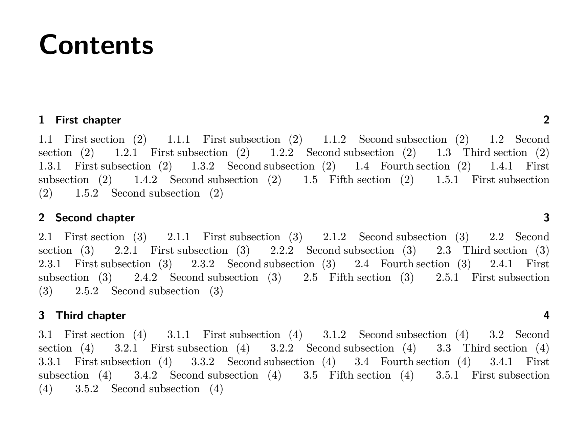

‘Innovations’ in \(\mathrm{\LaTeX}\)
‘The \(\mathrm{\LaTeX}\) kernel is a pathway to many abilities some consider to be unnatural.’
Horizontal TOC
The motivation was to reproduce the horizontal table of contents (TOC) one would see in many famous older textbooks (e.g. Weinberg). If one inserts the code here into the preamble, they will see a horizontal TOC like that below:

The \(\mathrm{\LaTeX}\) Tipbook
A short document of various \(\mathrm{\LaTeX}\) tips and tricks. View it here.
Authored jointly with E. Szymańska.